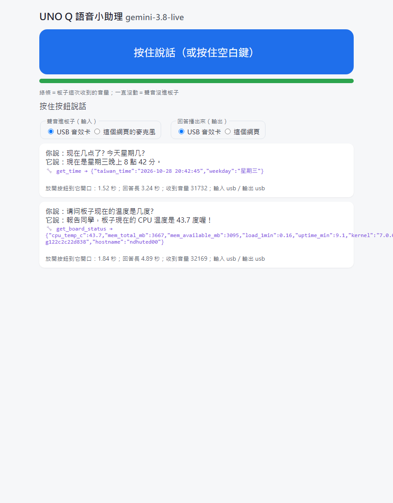

怎麼讀這一頁
AIza 開頭那串）。都不貼給 AI、不截進作業、不放進 git。- Ubuntu 終端機裡，複製是 Ctrl＋Shift＋C、貼上是 Ctrl＋Shift＋V。少了 Shift 的 Ctrl＋C 是「中斷」（停藍牙程式、停語音小助理都是用它）。
- 今天會打幾次板子的密碼（
ssh、sudo）：打的時候畫面不會動，打完按 Enter。刷完 558 沒設密碼的人，sudo reboot那一步改成拔線重插就好。 - 今天只照這一頁和老師的指令做；網路上或 AI 給的其他編法、別的
docker run參數（尤其是「特權」那種給容器整台板子權限的參數），先給老師看。 - 「跟 AI 講話」那幾步（第三部分 3-4）這一頁只給目標，不給逐字稿——用你自己的話問。
0 今天的路線、三張證據、就位
目標：知道今天三部分各做什麼；兩個 SSH 視窗都進到板子；starter 四個檔在板上；--prefetch 已經在視窗 C 跑著。
.ko，指紋跟老師的一模一樣，再雙向驗聲音
第三部分 16:10板子裡的語音小助理按住說話 → Gemini → 它自己讀板子再回答
收尾 16:55三張證據交 e學苑、回家挑戰 get_wifi、W9 期中展示
完成線＝三張證據（作業老師上課時會在 e學苑 開，先存好）：
| # | 證據 | 在哪一節 |
|---|---|---|
| 證據 1 | 手機 Plotter 的溫度曲線截圖（四支 yes 讓它爬上去、停掉後降下來） | 1-4 |
| 證據 2 | 親手編的音效卡：上半＝腳本最後兩行 一模一樣；下半＝重開機後 aplay -l 看到 card 1: UAC2Gadget＋ peak 那一行 | 2-1、2-4 |
| 證據 3 | 語音小助理畫面：問到溫度那一輪，看得到 🔧 get_board_status 和它回傳的 JSON、底下四個數字 | 3-4 |
要帶：自己的板子（核心 7.0.0、W7 刷過 558 的）、USB-C 資料線、板子的密碼（沒設的人也行，見上面）、手機（裝好免費的 nRF Connect 和 Bluefruit Connect）、個人 Gmail（第三部分要在 Google AI Studio 建一把金鑰，用你登入 agy 的那個帳號）。不用帶麥克風、不用帶筆記型電腦：全程用教室機，它的攝影機自帶麥克風（老師 10/28 確認）。
今天至少開三個終端機視窗：視窗 A 留在教室電腦（"$ADB" 開頭的都在這裡）；視窗 B SSH 進板子，主要的指令在這裡；視窗 C 也 SSH 進板子，先拿來跑 --prefetch，之後第一部分的 yes、第三部分的 docker logs 都在這裡。
做什麼接線、等心跳：USB-C 資料線把板子直接插在電腦上（不要經過 hub）。多久：等到心跳動畫出現（W4–W7 都等過）
打什麼不用打。
應該看到點陣從旋轉的圖案變成心跳動畫。還在轉就先等，不要拔。
做什麼打開終端機（Ctrl＋Alt＋T），這是視窗 A；找出 App Lab 附的 adb（前兩行是同一個指令，要一起貼）。多久：打完馬上印
ADB=$(find "$HOME/.arduino15/packages/arduino/tools/adb" \ -type f -name adb -perm -u+x -print 2>/dev/null | sort -V | tail -n 1) "$ADB" devices -l應該看到最後一行列出剛好一塊板、狀態是
device。$ADB只在跑過這段的視窗有值，換視窗要重跑。做什麼開 2222 通道（同一個視窗 A）。多久：打完馬上回來
"$ADB" forward tcp:2222 tcp:22
應該看到成功時不印字。
做什麼再開一個終端機（視窗 B），SSH 進板子。多久：打完密碼就進去
ssh -p 2222 arduino@127.0.0.1
應該看到問密碼時打板子的密碼；提示字元變成
arduino@開頭。W6 網卡在的人也可以直接ssh arduino@192.168.7.2（不用通道）。做什麼開場閘門兩行（視窗 B）：核心是不是
7.0.0、板上的 Arduino 套件是不是最新。老師會請全班舉手統計。第三樣在電腦看：App Lab 左下角或「關於」寫的版本要是0.11.0。多久：打完馬上印uname -r arduino-app-cli version
7.0.0-g122c2c22d838 Arduino App CLI version 0.14.0
應該看到第一行
7.0.0-g122c2c22d838（W7 刷完 558 就是它；官方套件庫 10/28 查過，核心最新就是 7.0.0，沒有更新的）；第二行0.14.0，後面還有一行daemon version: 0.14.0。不是 7.0.0 的：舉手，今天第二、三部分都要這顆核心，先照 W7 第一部分升上去（或刷 558）。套件不是 0.14.0 的，點開下面的摺疊。做什麼拿今天的 starter——這次直接在板子上抓、解開（視窗 B）：一行做三件事，走到家目錄、抓壓縮包直接解開、列出解開了什麼。多久：檔很小，幾秒
cd ~ && curl -fsSL https://cwstedctw.github.io/ndhu-ted-course-hub/weekly/11501-aiot/w08/starter/w08-starter.tar.gz | tar xz && ls ~/w08-starter
應該看到四個檔：
README.md、build-uac2.sh（第二部分）、health_ble.py（第一部分，跟 W7 那份一模一樣）、voice_agent.py（第三部分）。板子連不到課程網（教室網路擋住）：在電腦抓再"$ADB" push上去，或用老師的隨身碟。做什麼再開一個終端機（視窗 C），用第 4 步同一行 SSH 進板子，先把第二部分要用的東西抓好、裝好（對版的 headers、原始碼、
debian:trixie映像，再在映像裡裝好編譯器存成uac2-build:trixie），讓它跑著。這一步只準備、不編模組。多久：老師 10/28 整支 2 分 16 秒（家用 Wi-Fi）；⚠️ 30 塊板同時抓沒測，看教室網路bash ~/w08-starter/build-uac2.sh --prefetch
先抓好了。等一下再跑一次（不加 --prefetch）就會真的編。
應該看到它先印三行核心設定（
is not set，2-1 會講），接著Get:1 https://apt-repo.arduino.cc …抓 headers（9,114 kB）、抓 5 個原始碼檔、docker pull映像、在映像裡裝編譯器（75.1 MB、66 個套件）存成uac2-build:trixie（已經有就印uac2-build:trixie 已經有了），最後印上面那一行就結束。還沒印完不用等，先去做第一部分；1-6 再回來看。
卡住了：找不到 adb、連不上、套件沒升、核心不是 7.0.0
bash: : command not found：$ADB是空的，這個視窗沒跑過第 2 步，重跑一次。Connection refused：2222 通道沒開。回視窗 A 再打一次forward。WARNING: REMOTE HOST IDENTIFICATION HAS CHANGED!：這台電腦記著別塊板的鑰匙。在電腦打ssh-keygen -R "[127.0.0.1]:2222"，再連一次。- 板上套件不是 0.14.0：558 映像開了白名單，不用密碼就能升 Arduino 的套件（視窗 B）。老師 10/28 在已經最新的板上跑，印
arduino-router is already the newest version (0.11.0).和0 upgraded, 0 newly installed, 0 to remove and 149 not upgraded.；你的板會真的下載、安裝。
sudo apt-get install --only-upgrade -y arduino-app-cli arduino-router
- 核心不是
7.0.0-g122c2c22d838：第二部分的腳本會直接拒絕（印你的核心是 …，不是 7.0.0-g122c2c22d838）。回 W7 第一部分升核心，或刷 558；先併組用同學的板跟上。 curl:開頭的錯誤（板子連不到課程網）：在電腦視窗 A 抓同一個網址再"$ADB" push，或問老師拿隨身碟。- 忘了板子密碼：問老師，不要貼給 AI。
1-1 讓板子開始喊（health_ble.py）
目標：板上印出 advertising as 加上你自己取的名字。
板子沒有螢幕，手機就是它的螢幕。今天走藍牙低功耗（BLE）：不用線、不用 IP，手機直接連。板子當周邊（peripheral）：開好服務、一直「喊」——這叫廣播（advertising），像一直發名片；手機當中心（central）：掃描、挑一個連上去。程式是一支 Python，用板上現成的藍牙服務，不用裝套件。W7 上課沒做到這段，今天是第一次做；程式已經在 starter 裡（~/w08-starter/health_ble.py，跟 W7 那份一模一樣），不用另外推。
做什麼取名字：
UNOQ-＋組別兩位數＋座位字母，例如UNOQ-G03A。全班 30 塊板同時喊，名字要分得出誰是誰；最多 12 個英數字。不准用學號、姓名。多久：1 分鐘打什麼不用打，寫在紙上。
應該看到你和同組同學的名字都不一樣。
做什麼開始廣播（視窗 B）。把
G03A換成你的。這個視窗接下來一直讓它跑，不要關。多久：打完幾秒內印出前三行python3 ~/w08-starter/health_ble.py --name UNOQ-G03A
HH:MM:SS ready. health now: T=… L=… M=… D=… W=… U=… C=… GATT application registered (6e400001-b5a3-f393-e0a9-e50e24dcca9e) advertising as 'UNOQ-G03A' TX -> 43.2,0.31,38,61,72 (no subscriber)
應該看到前三行（時間、數字會不同）；之後沒人連的時候每秒一行
TX ->加(no subscriber)（數字是示意）。記下ready.那行的T=（溫度），1-2 要用。老師 10/22 在刷好的 558 上實測：藍牙服務、python3-gi、bluetooth群組都在，不用sudo、不用裝套件就跑起來，第一行像ready. health now: T=48.1 L=2.38 M=13 D=66 W=0 U=65 C=0。Wi-Fi 沒連的板W=0，正常。
卡住了：跑不起來
Permission denied、AccessDenied：帳號不在bluetooth群組（558 老師板是在的；沒刷成的舊板可能不在）。改用sudo跑：
sudo python3 ~/w08-starter/health_ble.py --name UNOQ-G03A
ModuleNotFoundError（提到gi）或RegisterApplication failed、RegisterAdvertisement failed：截圖舉手；先跟同組同學併用一塊板，證據照交（標「用同組的板」）。No such file or directory：starter 沒解開，回 0 的第 6 步。
想深入：三條路（USB、Wi-Fi、藍牙）、周邊與中心 → 互動概念頁的藍牙那一節。
1-2 手機找到自己（nRF Connect）
目標：在 30 個名字裡找到你的板，記下訊號強度，把名片上的 7 個 bytes 手算成溫度。
廣播封包（名片）最多只有 31 bytes：名字、服務代碼、再加幾個 bytes 的自訂資料。這支程式在名片裡塞了 廠商資料（Manufacturer Data）：公司代碼 0xFFFF（保留給測試用）＋7 bytes 的板況。App 的按鈕、欄位名稱大概長這樣，以你手機上的為準。
做什麼打開 nRF Connect 的掃描頁，用名字過濾（打
UNOQ-G03這種你的組別）。不要去手機的「設定 → 藍牙」配對，今天全部在 App 裡掃、連。多久：幾秒打什麼手機上：過濾欄打你的名字開頭。Android 12 以上要允許「附近的裝置」權限；更舊的 Android 要開定位。
應該看到清單裡有你的名字。老師 10/22 用電腦的藍牙代替手機掃 558 的板，8 秒掃到；⚠️ 手機 App 的畫面是 10/15 用 iPhone 測的，Android 版老師沒測過。
做什麼記下 RSSI（手機收到的訊號強度）：貼著板子、1 公尺、3 公尺、手掌包住手機，四個數字。多久：3 分鐘
打什麼不用打，抄在紙上。
應該看到負數，越接近 0 越強；離越遠、被手掌包住，數字越小（越負）。
做什麼點開你的板，找
0xFFFF後面那串 7 個 bytes，照下表手算，跟 1-1 板上ready.那行的T=比。多久：4 分鐘（落後時改成看老師算一次）打什麼不用打。順序：
[溫度×10 低位, 溫度×10 高位, 負載×10, 記憶體%, 容器數, 開機分鐘 低位, 開機分鐘 高位]，低位在前（小端序）。應該看到示意（不是實測）：
B0 01 03 26 02 7D 00→ 溫度0x01B0＝432 → 43.2 °C、負載 3 → 0.3、記憶體0x26＝38%、容器 2、開機0x007D＝125 分。老師 10/22 在 558 上實際掃到的是db 01 17 0d 00 01 00→ 47.5 °C、負載 2.3、記憶體 13%、容器 0、開機 1 分。你算出來的溫度要跟板上的T=對得上。做什麼✋ 先猜：兩分鐘後再掃一次，名片上的溫度會不會變？猜完真的再掃一次。多久：2 分鐘
打什麼不用打。
應該看到⚠️ 老師沒實測（推論不會變：名片是開始廣播那一刻的快照）。不管結果如何，要講得出為什麼。
卡住了：掃不到、名字一樣
- 掃不到：板上那個視窗還在跑嗎？有沒有印
advertising as？手機藍牙開了嗎？Android 權限給了嗎？ - 兩個一樣的名字：你們組別或座位寫重了。Ctrl-C 停掉，換名字重跑。
- 找不到
0xFFFF：App 畫面跟這頁寫的不一樣，找「Manufacturer」字樣那一欄；還是找不到，看隔壁同學的手機一起算。 - 點開之後看到好幾個服務：正常。558 映像自己還帶了一個 BLE-MIDI 服務（
03b80e5a開頭）和1800、1801、180A幾個標準服務；我們的是6E400001開頭那個。
1-3 連上、問它（Bluefruit Connect 的 UART）
目標：手機每秒收到一行板況；打 help、health、apps、ip 板子都會回。
廣播是一對全部、單向；連線是一對一、雙向。連上之後手機看到一棵小樹（GATT）：服務下面掛特徵（characteristic）。這支程式用 Nordic UART Service：RX（手機寫進來）、TX（板子通知（notify）出去）——RX／TX 是站在板子看的。通知一包最多 20 bytes，長的切開送。連上之後如果看到好幾個服務是正常的（558 自帶 BLE-MIDI 和幾個標準服務），找 6E400001 開頭那個。
做什麼打開 Bluefruit Connect，在清單裡選你的板、連上，切到 UART 頁。多久：1 分鐘
打什麼手機上點選，不用打字。
phone subscribed (StartNotify)
應該看到手機 UART 頁每秒一行數字；板上視窗 B 印出上面這一行。
做什麼在 UART 頁打字問板子：
help、health、apps、ip，最後試HELP（大寫）。多久：3 分鐘打什麼手機 UART 輸入框一次打一個，送出。
RX <- 'help'
應該看到每個都有回：
health回一行帶標籤的板況（像T=43.2 L=0.31 M=38 D=61 W=72 U=7512 C=2，數字是示意）；apps回正在跑的容器名（沒在跑 App 就回none）；ip回板子的 IP（老師板回192.168.7.2/24 172.17.0.1/16）；HELP也有回（程式先轉小寫）。板上每打一次印一行RX <-。清單以外的字回unknown: '…' (try help)，不會執行。
卡住了：連上了沒數字、打字沒回
- 清單裡好幾個服務、不知道選哪個：選
6E400001開頭那個（Nordic UART Service）；BLE-MIDI 那個是映像自帶的，不用管。 - 連上了但沒有每秒一行：還沒切到 UART 頁（或沒訂閱 TX）；板上沒印
phone subscribed就是還沒訂閱。 - 回
unknown:：拼錯字，或那個字不在清單裡。先打help看清單。
1-4 Plotter、讓四顆核心一起忙
目標：手機 Plotter 上看到溫度爬上去、再降下來（截圖＋三個數字＝證據 1）。
板子每秒送一行純數字、逗號分隔：溫度°C、負載、記憶體%、硬碟%、Wi-Fi%（Wi-Fi 是 0–100% 的訊號強度，不是 dBm；Wi-Fi 沒連這條線會一直是 0）。Plotter 只認純數字、沒有標籤，所以靠順序認哪條線是誰。
做什麼Bluefruit Connect 切到 Plotter；想只看溫度，回 UART 頁打
plot temp（回plot order: temp），再切回 Plotter。記下現在的溫度（起點）。多久：2 分鐘打什麼手機上：UART 頁打
plot temp（想看全部五條打plot all）。應該看到五條線（或只剩一條溫度線）一直往右畫。
做什麼看視窗 C（0 的第 7 步跑
--prefetch的那個）：印了先抓好了…＝它已經回到板子的提示字元（arduino@），直接跳第 3 步打yes，不用再 ssh（在板子裡再打 ssh 會變成板子連自己）。還在跑，才在電腦另開一個終端機（視窗 D）用下面這行進板子，第 3、4 步改在視窗 D 打。視窗 B 的藍牙程式繼續跑，不要動它。多久：馬上（要開視窗 D 的：打完密碼就進去）ssh -p 2222 arduino@127.0.0.1
應該看到視窗 C（或 D）的提示字元是
arduino@開頭。開視窗 D 時Connection refused：視窗 A 的 2222 通道沒開，先打"$ADB" forward tcp:2222 tcp:22；W6 網卡在的人也可以ssh arduino@192.168.7.2。做什麼讓四顆核心一起忙：開四支
yes（每支一直印 y 到黑洞），看 Plotter 3 分鐘，記下最高溫度。多久：3 分鐘for i in 1 2 3 4; do yes > /dev/null & done
應該看到Plotter 上的溫度和負載往上爬。⚠️ 爬多高、爬多快老師沒量過，自己量。
做什麼停掉四支
yes，再看 2 分鐘，記下停掉後 2 分鐘的溫度。一定用-x（只停名字剛好是yes的），別用-f，會連你的 SSH 一起停掉。多久：2 分鐘pkill -x yes
應該看到負載先掉下來，溫度慢慢降。📸 Plotter 截圖＋起點、最高、停掉後 2 分鐘三個數字＝證據 1。
卡住了：Plotter 沒線、SSH 斷了
- Plotter 沒有線：要先連上、訂閱（1-3 的 UART 有每秒一行才行）。
pkill之後 SSH 也斷了：用了-f。重新 SSH 進去，用pkill -x yes。- 溫度看起來沒變：五條線的第一條才是溫度；或打
plot temp只留一條。
1-5 誰都連得上你的板
目標：講得出為什麼程式只認清單上的字。
這支程式的 RX／TX 沒設加密：不用配對、不用密碼，範圍內任何手機都連得上、寫得進來。
做什麼你先在 Bluefruit Connect 按 Disconnect（斷線）；同組同學再用他的手機連你的板、打
apps。輪流，一次一支手機，前一位斷線了下一位才連。多久：3 分鐘（落後時改成老師口頭講 2 分鐘）打什麼同學的手機：UART 頁打
apps。應該看到他看得到你板子上在跑什麼。⚠️ 第一支手機斷線後第二支連不連得上、幾支手機能同時連，老師都沒測。連不上：在板上視窗 B 按 Ctrl-C，再重跑 1-1 第 2 步那一行，讓它重新開始喊。
做什麼想一想：如果程式把手機傳來的字直接丟給 shell 執行，會怎樣？這支程式怎麼避免？多久：2 分鐘
打什麼不用打。
應該看到（你的答案）程式的
handle_command()先把字去空白、轉小寫，只跟清單比：比到才回、比不到回unknown，絕不執行手機傳來的字。老師 10/22 故意送了一串刪檔指令進去，板子只回unknown: '…' (try help)，什麼都沒執行。第三部分的語音小助理也是同一個道理：它只能呼叫程式裡寫好的兩個工具，不能叫板子做別的事。
1-6 收掉藍牙、看 --prefetch 跑完了沒
目標：板子關乾淨、視窗 B 回到提示字元；視窗 C 印了 先抓好了…。
做什麼再確認一次四支
yes都停了（視窗 C）。多久：馬上pkill -x yes
應該看到不印字（已經停了也一樣）。
做什麼視窗 B 按 Ctrl-C 停掉藍牙程式；手機在 App 裡斷線。多久：馬上
打什麼視窗 B 按 Ctrl-C（不用 Shift）。
bye
應該看到程式收掉廣播和服務，最後印
bye（前面有時間）。視窗 B 回到arduino@的提示字元，第二部分就用它。做什麼回視窗 C 看 0 的第 7 步跑完了沒。多久：馬上
打什麼不用打，往上捲看最後一行。
先抓好了。等一下再跑一次（不加 --prefetch）就會真的編。
應該看到上面這一行。沒有（印了
curl:或docker pull的錯）：舉手；第二部分先看老師的板跑，用 W7 發的那兩個.ko繼續（指紋本來就一樣），回家再跑一次。
2-1 真的編（build-uac2.sh）
目標：腳本最後兩行印 一模一樣（截圖＝證據 2 的上半）。
W7 老師給你的 u_audio.ko、usb_f_uac2.ko 是哪裡來的？這顆核心本來沒有 USB 音效（UAC2）這個功能，所以得自己補一個核心模組（kernel module，.ko）。編一個模組要三樣東西：① 對版的 headers（核心的標頭檔與符號表 Module.symvers，從官方套件庫抓，不用 sudo）② 對版的原始碼（5 個 .c／.h，從 Arduino 的核心原始碼倉抓，分支就是這顆核心的分支）③ 同版的編譯器（gcc 14.2.0；板子上沒有，所以開一個 debian:trixie 容器當工作間）。腳本把三樣抓齊、在容器裡 make，產物放 ~/uac2-rebuild/，不碰 W7 的 ~/uac2-soundcard/。
做什麼先親眼看：這顆核心的設定裡 UAC 都沒開（視窗 B）。多久：打完馬上印
zcat /proc/config.gz | grep -E "F_UAC|G_AUDIO"
# CONFIG_USB_CONFIGFS_F_UAC1 is not set # CONFIG_USB_CONFIGFS_F_UAC1_LEGACY is not set # CONFIG_USB_CONFIGFS_F_UAC2 is not set CONFIG_COMMON_CLK_AXG_AUDIO=m
應該看到就是這四行：前三行
is not set＝核心裡沒有 UAC，最後一行不相干（grep找AUDIO這個字順便撈到的，正常）。核心裡沒有，所以 W7 才要外掛兩個.ko。做什麼真的編（視窗 B；0 的
--prefetch已經把檔和編譯器都備好，這次不加參數、不碰網路）。跑的時候看畫面：headers、原始碼都在 → 用uac2-build:trixie容器make→ 跟老師的指紋比（老師的兩個指紋寫在腳本開頭）。多久：開場--prefetch做過約 25 秒（老師 10/28：24.6 秒）；沒做過約 2 分 40 秒（會現場抓檔、裝編譯器）bash ~/w08-starter/build-uac2.sh
make: Entering directory '/work/hdr/usr/src/linux-headers-7.0.0-g122c2c22d838' warning: the compiler differs from the one used to build the kernel CC [M] u_audio.o CC [M] f_uac2.o LD [M] usb_f_uac2.o MODPOST Module.symvers LD [M] u_audio.ko LD [M] usb_f_uac2.ko vermagic: 7.0.0-g122c2c22d838 SMP preempt mod_unload aarch64 u_audio.ko 一模一樣 6c90c70d8cd54db8593ba2d74ce9b0e695a182bd2fca2724c50d390f83dcbdd3 usb_f_uac2.ko 一模一樣 5c955ddd1414c1db13acfbf19c26911326683b7a535df4e1e28efc31d6d26f6a OK → 回學生頁 2-3：把兩個檔複製進 ~/uac2-soundcard/ 再重開機，讓 hook 載你自己編的（模組正在被音效卡用著，rmmod 會被拒）
應該看到（節錄，中間還有幾行）
CC [M]＝把一個.c編成.o；LD [M]＝連結成.ko；MODPOST＝對符號表；vermagic:那行就是模組身上的章，開頭跟uname -r一樣。warning: the compiler differs…正常：只是編譯器名字不同（gccvsaarch64-linux-gnu-gcc），版本都是 14.2.0。一模一樣那兩行＝你編出來的檔跟老師的指紋逐位元組相同（老師的指紋寫死在腳本開頭，不靠你板上 W7 的檔）。📸 最後三行截圖＝證據 2 上半。最後一行說的就是 2-3：模組正被音效卡用著，rmmod會被拒，所以換模組靠重開機。
卡住了：核心不對、抓不下來、不一樣
- 第一行就印
你的核心是 …，不是 7.0.0-g122c2c22d838：先照 W7 第一部分升上去（或刷 558）再回來。：腳本拒絕在別的核心上編（編出來也載不進）。回 0 的閘門。 curl:、docker pull卡很久或報錯：教室網路慢（⚠️ 30 塊板同時從 Docker Hub 抓debian:trixie沒測過）。先看老師的板跑，用 W7 發的.ko做 2-3、2-4（指紋本來就一樣），回家再跑一次。- 印
不一樣！：原料或工具跟老師的不同（分支、headers 版本、編譯器）。不要拿它去 2-3 換，截圖舉手；2-3、2-4 用 W7 那份。 - 多印一行
（注意：你板上 ~/uac2-soundcard/u_audio.ko 的指紋跟老師 W7 發的不同，先問老師）：你編的沒問題（跟腳本裡老師的指紋比過），是板上 W7 那份不一樣（被改過或不完整）。2-3 之前先問老師，別急著蓋。 - 容器裡
apt-get install很慢：沒做--prefetch才會現場裝編譯器（75.1 MB、66 個套件）；做過的直接用uac2-build:trixie，不碰網路。
2-2 比指紋：為什麼會一模一樣
目標：四行 SHA256 親眼看到兩兩相同；講得出「可重現建置」是什麼。
SHA256 是檔案的指紋：差一個位元組，指紋就完全不同。你 10/29 在自己的板上編的，跟老師 2026-08-21 編的指紋相同，代表同原始碼＋同 headers＋同版編譯器＝同一串位元組——這叫可重現建置（reproducible build）。重點不是「誰算的指紋」，是原料和工具一樣。
做什麼兩個資料夾、四個檔的指紋放在一起看（視窗 B）。板上沒有 W7 那份
~/uac2-soundcard/的人（會印No such file or directory），只打前半sha256sum ~/uac2-rebuild/*.ko，拿兩行跟腳本最後印的老師指紋比就好。多久：打完馬上印sha256sum ~/uac2-rebuild/*.ko ~/uac2-soundcard/*.ko
6c90c70d8cd54db8593ba2d74ce9b0e695a182bd2fca2724c50d390f83dcbdd3 /home/arduino/uac2-rebuild/u_audio.ko 5c955ddd1414c1db13acfbf19c26911326683b7a535df4e1e28efc31d6d26f6a /home/arduino/uac2-rebuild/usb_f_uac2.ko 6c90c70d8cd54db8593ba2d74ce9b0e695a182bd2fca2724c50d390f83dcbdd3 /home/arduino/uac2-soundcard/u_audio.ko 5c955ddd1414c1db13acfbf19c26911326683b7a535df4e1e28efc31d6d26f6a /home/arduino/uac2-soundcard/usb_f_uac2.ko
應該看到四行：第一、三行同一串
6c90c70d…，第二、四行同一串5c955ddd…。做什麼看產物有多大。多久：打完馬上印
ls -la ~/uac2-rebuild/
應該看到三個檔：
u_audio.ko114,024 bytes、usb_f_uac2.ko207,120 bytes、Makefile66 bytes（老師 10/28 的大小；一模一樣的檔大小當然也一樣）。做什麼讀你自己編的模組身上的章。多久：打完馬上印
modinfo -F vermagic ~/uac2-rebuild/usb_f_uac2.ko
7.0.0-g122c2c22d838 SMP preempt mod_unload aarch64
應該看到上面這一行，開頭＝
uname -r。W7 你親眼看過：章對不上，insmod就不收。做什麼想一想：如果你在原始碼裡改一個字（例如改掉一行註解）再編，指紋會不會變？大小呢？多久：2 分鐘
打什麼不用打（想試的人回家試，今天時間不夠）。
應該看到（你的答案）指紋一定變；大小不一定變。所以「指紋相同」是很強的證據：連一個位元組都沒差。
想深入：原始碼／headers／編譯器三個旋鈕、動任一個指紋就變 → 概念頁 §3。
2-3 換上你自己編的、重開機、驗它真的載了
目標：~/uac2-soundcard/ 裡是你自己編的檔；重開機後 lsmod 兩行、c.1 四個、hook 日誌 [add] uac2 已掛。
W6 裝的 hook 在板子開機、adbd 起來時會去 /home/arduino/uac2-soundcard/ 載這兩個檔（路徑寫死在 hook 裡，不能改）。所以把你編的檔複製進去、重開機，板子就是用你編的模組在跑。先備份老師那份，隨時換得回來。指紋一樣，所以板子跑起來一模一樣——這正是重點：你編出來的就是正品。
做什麼備份 W7 那份（視窗 B）。多久：馬上
[ -d ~/uac2-soundcard.w7 ] || cp -r ~/uac2-soundcard ~/uac2-soundcard.w7
應該看到不印字（已經有備份就跳過，重跑也不會疊成巢狀資料夾）。
做什麼把你編的兩個檔複製進 hook 認的那個資料夾，再看一次指紋。多久：馬上
cp ~/uac2-rebuild/*.ko ~/uac2-soundcard/ sha256sum ~/uac2-soundcard/*.ko
應該看到還是
6c90c70d…、5c955ddd…兩串（本來就一樣）。做什麼重開機讓 hook 重新載模組（SSH 會斷，正常）。沒設密碼的人：拔線、重插，效果一樣。多久：老師板 31 秒 adb 回來
sudo reboot
應該看到視窗 B 的 SSH 斷掉、回到電腦。等心跳動畫回來。
做什麼視窗 A 重開通道，視窗 B 再 SSH 進去（跟 0 一樣）。多久：等 30 秒
"$ADB" devices -l "$ADB" forward tcp:2222 tcp:22
ssh -p 2222 arduino@127.0.0.1
應該看到
device；視窗 B 又是arduino@開頭。做什麼驗三樣：模組載了、
c.1四個身分、hook 自己寫的日誌（視窗 B）。多久：打完馬上印lsmod | grep -E "u_audio|uac2" ls /sys/kernel/config/usb_gadget/g1/configs/c.1/ cat /tmp/ncm-hook.log
usb_f_uac2 45056 2 u_audio 24576 2 usb_f_uac2 acm.GS0 ffs.adb ncm.usb0 uac2.usb0 [add] ncm 已掛 [add] uac2 已掛
應該看到
lsmod前兩行是這兩個模組（後面還有snd_pcm、snd、libcomposite三行提到它們，正常）；c.1四個名字；日誌每行前面有日期時間（板子的 UTC），有[add] uac2 已掛。這就是你自己編的模組在跑。
卡住了：載不進、c.1 少了、想換回老師那份
- 日誌寫
[add] uac2 模組載不進（vermagic？）跳過：核心不是 7.0.0，或~/uac2-soundcard/裡的檔壞了。看uname -r、再sha256sum ~/uac2-soundcard/*.ko。 c.1只有acm.GS0 ffs.adb：hook 沒裝（W7 2-4 的 ③ 沒做）。回 W7 學生頁照做，或先用同學的板。- 想換回 W7 老師那份：複製回去、再重開機一次。
cp ~/uac2-soundcard.w7/*.ko ~/uac2-soundcard/
2-4 雙向驗聲音
目標：板上 aplay -l 看到 card 1；板子發的嗶聲從電腦喇叭出來；電腦播的聲音板子錄得到、peak 明顯大於 0（截圖＝證據 2 的下半）。
這張卡有兩個方向，用它向電腦報的設定名字記：p_＝板→電腦（48 kHz，電腦當它是麥克風）、c_＝電腦→板（64 kHz，電腦當它是喇叭）。🔑 板→電腦這個方向，電腦那頭要有程式正在「錄」麥克風 (UNO Q Audio)，板上的聲音才送得出去；電腦沒在收，板上的 aplay 不報錯、就卡著不動。Windows 的「聆聽此裝置」就是一直在錄。第三部分的語音小助理全靠這兩個方向，所以現在先驗。
做什麼板子自己看得到這張卡嗎（視窗 B）。多久：打完馬上印
aplay -l arecord -l cat /proc/asound/cards
card 1: UAC2Gadget [UAC2_Gadget], device 0: UAC2 PCM [UAC2 PCM] 1 [UAC2Gadget ]: UAC2_Gadget - UAC2_Gadget
應該看到
aplay -l和arecord -l都有card 1: UAC2Gadget那行（card 0是板子自己的ArduinoImolaHPH，四個 MultiMedia 裝置，不用管）；/proc/asound/cards第二張就是它。📸 截下來。做什麼電腦那頭設兩個方向。教室機是 Ubuntu：點開 E307 那個摺疊（⚠️ 老師沒驗過、現場為準；接不起來就跳過第 3、4 步，第三部分走網頁模式，照實截圖寫「沒接起來」不扣分）。在家用自己的 Windows 電腦時照 Windows 那個摺疊。多久：⚠️ Ubuntu 沒量；Windows 約 2 分鐘
打什麼Ubuntu 見摺疊（四行
pactl）；Windows 不用打指令，點設定。在家用自己的 Windows 電腦時（老師 10/28 驗過）：兩邊都是「聆聽此裝置」
Win＋R → 打
mmsys.cpl→ Enter → 切到錄製分頁。① 選 麥克風 (UNO Q Audio) → 內容 → 接聽 → 勾「聆聽此裝置」→「透過此裝置播放」選你真的在聽的喇叭 → 套用。（＝板子的聲音出電腦喇叭；也等於電腦一直在「收」板子。）
② 選電腦自己的麥克風 → 內容 → 接聽 → 勾「聆聽此裝置」→「透過此裝置播放」選 喇叭 (UNO Q Audio) → 套用。（＝你的聲音進板子。）
看不到
UNO Q Audio：板子c.1有uac2.usb0嗎（2-3）？有就拔線重插。macOS（⚠️ 10/28 沒驗）
系統設定 → 聲音 → 輸入選板子那張、輸出選板子那張。老師 8/17 看到的名字是
Capture Inactive／Playback Inactive，現在可能已變成UNO Q Audio；⚠️ 這條今天沒再驗，以你畫面上的為準。Mac 上怎麼把板子的聲音轉播到你的喇叭、把你的麥克風轉播進板子，老師也沒驗過——做不到就直接用第三部分的網頁模式。E307 Ubuntu（⚠️ 全部沒驗，現場為準）
教室機的麥克風是攝影機內建的那支（老師 10/28 確認有）；PipeWire 的音效卡字樣、怎麼把它接到
UNO Q Audio，老師還沒在 E307 驗過。方向是：先列出輸出端（sink）和輸入端（source），找到名字含UNO_Q／UAC2的那組，再用module-loopback把「教室機麥克風 → UNO Q 的 sink」和「UNO Q 的 source → 教室機喇叭」各接一條。你就是第一批驗證的人；接不起來就直接用第三部分的網頁模式（保底），把看到的字樣截圖給老師。pactl list short sources pactl list short sinks
從兩張清單抄下名字：你的麥克風（source）、UNO Q 那張卡的 source 與 sink、你的喇叭（sink）。下面兩行的大寫字換成剛抄的名字再貼（⚠️ 沒驗）：第一行＝你的麥克風進板子，第二行＝板子的聲音出你的喇叭。
pactl load-module module-loopback source=MIC_NAME sink=UNOQ_SINK pactl load-module module-loopback source=UNOQ_SOURCE sink=SPEAKER_NAME
應該看到⚠️ 教室機 Ubuntu 以現場為準：預期
pactl list short sources／sinks各有一個名字含 UNO Q 或 UAC2 的（名字沒驗）——你就是第一批驗證的人。在家 Windows：錄製分頁裡有麥克風 (UNO Q Audio)、播放分頁裡有喇叭 (UNO Q Audio)，狀態 OK（老師 10/28 實測；WASAPI 列麥克風 48000／喇叭 64000）。⚠️ macOS 沒驗。做什麼板→電腦：板子發 5 秒 440 Hz 的嗶聲（視窗 B）。
timeout 55 秒後自己停、離開碼 124，正常。多久：5 秒timeout 5 speaker-test -D plughw:UAC2Gadget,0 -c 2 -t sine -f 440
應該看到電腦喇叭傳出 5 秒的嗶（老師電腦端錄到 440 Hz，峰值 11,955–13,066，滿刻度 32,767）。沒聲音、而且指令一直不結束：電腦沒在收（Windows ① 沒勾），回上一步。
做什麼電腦→板：先讓聲音流進板子——Windows 把播放軟體（音樂、影片）的輸出裝置指到
喇叭 (UNO Q Audio)，或直接對電腦麥克風講話（第 2 步的 ② 已經把麥克風聆聽到 UNO Q Audio）；板上錄 3 秒、算峰值（視窗 B，兩行）。多久：3 秒＋馬上arecord -D plughw:UAC2Gadget,0 -f S16_LE -c 1 -r 16000 -d 3 /tmp/in.raw python3 -c "import struct;d=open('/tmp/in.raw','rb').read();n=len(d)//2;print('peak',max(abs(v) for v in struct.unpack('<%dh'%n,d[:n*2])))"peak 32000
應該看到老師播 300 Hz 測試音得到
peak 32000；沒聲音流進來時接近 0。你的數字會不同，但要明顯大於 0；peak接近 0＝聲音沒流進板子。📸card 1那行＋peak那行＝證據 2 下半。
卡住了：沒 card 1、嗶不出來、peak 是 0
- 板上
aplay -l沒有card 1：c.1沒有uac2.usb0，回 2-3。 speaker-test卡住不動、沒聲音：電腦沒在收。可以在視窗 C 看它是不是真的塞住：hw_ptr停在 0、delay 16384就是（老師 10/28 第一輪就是這樣卡住的）。設好聆聽再試。
cat /proc/asound/card1/pcm0p/sub0/status
peak接近 0＝聲音沒流進板子：播放軟體的輸出沒指到喇叭 (UNO Q Audio)、或 Windows ② 沒設。把播放裝置切成喇叭 (UNO Q Audio)，或錄的那 3 秒對著麥克風講話，再錄一次。- 電腦端
UNO Q Audio有但是「已停用」：右鍵啟用。 - Ubuntu 什麼都看不到：照實截圖寫「沒看到」，不扣分；第三部分走網頁模式。
想深入：p_／c_ 方向選擇器、「電腦沒在收就塞住」的動畫 → 概念頁 §4。
3-1 金鑰進板子
目標：板上有一個 ~/.gemini_key 檔，wc -c 印出的數字不是 0。
語音小助理要連 Google 的 Gemini 即時語音，連線要一把 API 金鑰（AIza… 開頭的一長串）。金鑰是密碼：不貼進作業、不貼給別人、不放進 git。所以用 read -s 貼：畫面不顯示、也不會留在指令歷史。免費方案就能用（⚠️ 預設模型 gemini-3.8-live 免費方案開不開放老師沒驗到；程式連不上會自動換另一個，3-2 會看到）。
做什麼電腦瀏覽器開 Google AI Studio（
aistudio.google.com），用個人 Gmail（登入 agy 的那個）登入，建一把 API 金鑰、複製起來。⚠️ 按鈕字樣（Get API key／Create API key）老師沒逐字驗，現場為準。多久：2 分鐘打什麼不用打指令，網頁上點。
應該看到一串
AIza開頭的英數字。不要截圖、不要貼到任何對話裡。做什麼把金鑰存進板子（視窗 B）：這一行先問你要金鑰（貼上、按 Enter，畫面不會顯示），寫進
~/.gemini_key，把檔案權限改成只有你能讀，最後印字數。多久：馬上read -s -p "貼上金鑰再按 Enter（畫面不會顯示）: " K; printf %s "$K" > ~/.gemini_key; chmod 600 ~/.gemini_key; echo; wc -c ~/.gemini_key
應該看到最後一行是一個數字（金鑰有幾個字）加
/home/arduino/.gemini_key。0＝沒貼進去，再跑一次。
卡住了：貼不進去、金鑰檔變成資料夾
wc -c印 0：貼上之後沒按 Enter，或剪貼簿是空的。重跑那一行。- 印
Is a directory、或~/.gemini_key已經是一個資料夾：你在建金鑰檔之前就先跑了 3-2 的docker run——docker 會自己建一個同名的空資料夾（root 擁有）。先把那個空資料夾刪掉（自己家目錄裡的空資料夾可以刪），再跑一次上面那行。
rmdir ~/.gemini_key
- AI Studio 不給建金鑰：換個人 Gmail 試；還不行就先併組用同學的板（金鑰是同學的，不要抄到自己板上）。
3-2 跑起來、開網頁
目標：視窗 B 印出 語音小助理：模型 …；電腦瀏覽器 http://localhost:7790 看到大按鈕。
程式用 App Lab 的官方容器跑（裡面已經有 websockets、fastapi、uvicorn、aplay、arecord）。-u 0＝容器裡用 root 才開得了 /dev/snd（是容器裡的 root，不是板子的）；--device /dev/snd 只把音效裝置交給容器，不加給容器整台板子權限的那個特權參數（老師 10/28 實測不加也雙向聲音照通）。網頁開在板子的 7790 埠；用 adb forward 把它接到電腦的 localhost，因為瀏覽器只在 localhost 或 https 才肯開麥克風（網頁模式要用）。
做什麼找出板上的 App Lab 容器映像名字（視窗 B）。多久：馬上
IMG=$(docker images --format '{{.Repository}}:{{.Tag}}' | grep python-apps-base | head -1); echo $IMGghcr.io/arduino/app-bricks/python-apps-base:0.13.1
應該看到老師的板是
:0.13.1；刷完 558 沒升過 App Lab 的板會是:0.10.1。兩版都測過能跑（⚠️ 學生板是哪一版沒查）。印空白＝板上沒有這個映像，舉手。做什麼跑起來（視窗 B，一整行）。這個視窗接下來一直讓它跑；停是 Ctrl-C。多久：幾秒印出第一行
docker run --rm -it --name voice -u 0 --network host --device /dev/snd -v ~/w08-starter:/w08 -v ~/.gemini_key:/key:ro --entrypoint python3 "$IMG" /w08/voice_agent.py
語音小助理：模型 gemini-3.8-live → gemini-2.5-flash-native-audio-preview-12-2025、音效卡 plughw:UAC2Gadget,0；電腦先 adb forward tcp:7790 tcp:7790，再開 http://localhost:7790（USB 網路也可：http://192.168.7.2:7790）
應該看到第一行就是上面那行；之後每問一輪會印一行 JSON（視窗 C 打
docker logs voice也看得到）。做什麼電腦把板子的 7790 接到自己的
localhost（視窗 A）。多久：馬上"$ADB" forward tcp:7790 tcp:7790
應該看到成功時不印字。
做什麼電腦瀏覽器開
http://localhost:7790。多久：馬上打什麼瀏覽器網址列打
http://localhost:7790。應該看到標題「UNO Q 語音小助理」、旁邊是現在用的模型名、一顆大按鈕「按住說話（或按住空白鍵）」、一條綠條、一句狀態
按住按鈕說話、兩組單選（輸入／輸出各有 USB 音效卡／這個網頁）。還沒連 Gemini，所以模型名旁沒有括號；第一次按下去才連。
卡住了：找不到金鑰、/key 是資料夾、名字衝突、網頁打不開
- 印
找不到金鑰檔 /key：先在板子上建 ~/.gemini_key（學生頁第 3 部分）：3-1 沒做，做完再跑。 - 印
/key 是資料夾不是檔案：板上還沒建 ~/.gemini_key 就先跑了 docker，docker 會自己建一個同名的空資料夾。先 Ctrl-C，板上 rmdir ~/.gemini_key，照學生頁第 3 部分建金鑰，再跑一次（老師 10/28 自己踩到；舊版程式印的是連不上 Gemini：IsADirectoryError）：照它說的——Ctrl-C，刪掉空資料夾，回 3-1 第 2 步建金鑰，再跑。
rmdir ~/.gemini_key
docker:說名字voice已經在用（Conflict）：上一次沒關乾淨，在視窗 C 把它清掉再跑。
docker rm -f voice
- 網頁寫
連不到板子上的程式（它還在跑嗎？）：視窗 B 的程式死了或adb forward沒做；兩邊都看。 - 網頁開得了但按下去狀態寫
連不上 Gemini：…：金鑰貼錯（3-1 重做）或沒網路（板子要連得到 Google）。 - 標題旁寫
gemini-2.5-flash-native-audio-preview-12-2025（gemini-3.8-live 連不上（…），改用這個）：正常——預設模型你的方案不給用，程式自動換了；回答會慢一點（老師量到放開到開口 4.2 秒）。
3-3 電腦的聲音怎麼進板子、怎麼回來
目標：教室機走網頁模式講得通；在家用自己電腦的人兩個方向設好（2-4 設過的就是這個）。
聲音走的路有六段：① 電腦麥克風 →（電腦把麥克風「播」到 喇叭 (UNO Q Audio)）→ ② 板子 arecord（16 kHz 單聲道）→ ③ 每 0.1 秒一段送 Gemini → ④ Gemini 回 24 kHz 的聲音 → ⑤ 板子 aplay 到音效卡 → ⑥ 麥克風 (UNO Q Audio) →（電腦「聆聽此裝置」）→ 電腦喇叭。①⑥ 兩段在電腦上，就是 2-4 設的那兩個方向；教室機走網頁模式時，①⑥ 換成瀏覽器的麥克風和網頁播放。30 個人同時講，麥克風會收到隔壁的聲音：按住才講、放開就閉嘴、分組輪流。
做什麼USB 模式（在家用自己的電腦，或 E307 的 loopback 接起來的人）：確認 2-4 第 2 步的設定還在（重開機、換 USB 孔都可能掉），沒做過的點開摺疊做。教室機接不起來的直接做第 2 步。多久：1 分鐘
打什麼不用打指令。
在家用自己的 Windows 電腦時（老師 10/28 驗過）：兩邊都是「聆聽此裝置」
Win＋R →
mmsys.cpl→ 錄製分頁。① 麥克風 (UNO Q Audio) → 內容 → 接聽 → 勾「聆聽此裝置」→「透過此裝置播放」選你真的在聽的喇叭 → 套用（板子的回話出電腦喇叭）。
② 電腦自己的麥克風 → 內容 → 接聽 → 勾「聆聽此裝置」→「透過此裝置播放」選 喇叭 (UNO Q Audio) → 套用（你的聲音進板子）。
macOS（⚠️ 沒驗）
系統設定 → 聲音：輸入、輸出都選板子那張（名字可能是
UNO Q Audio或Capture Inactive／Playback Inactive，⚠️ 以畫面為準）。⚠️ 兩個方向怎麼接老師沒驗，做不到就用下面的網頁模式。E307 Ubuntu（⚠️ 現場為準）
照 2-4 那個摺疊：先
pactl list short sinks／sources找到 UNO Q 那組，再用module-loopback各接一條。接不起來不要耗時間，直接用網頁模式。應該看到Windows 錄製分頁兩個裝置的「接聽」都勾著。2-4 的嗶聲有聽到、
peak有數字，就是通的。做什麼教室機就走這條——網頁模式（不走 USB 聲音）：網頁上「輸入」切「這個網頁的麥克風」、「輸出」切「這個網頁」。麥克風就是教室機攝影機內建的那支；Chrome 第一次會跳出麥克風權限，按允許（⚠️ Chrome 認不認得它、名字叫什麼老師沒驗）。教室機本來就有 App Lab 的 adb，所以 3-2 第 3 步的
"$ADB" forward tcp:7790 tcp:7790照打。USB 通的人也要會這招，3-5 要比。多久：30 秒打什麼網頁上點兩組單選。一定要是
http://localhost:7790（3-2 第 3、4 步）：走 USB 網路的http://192.168.7.2:7790開得了網頁、開不了麥克風。應該看到按鈕下方寫「網頁麥克風已開（… Hz → 16000 Hz 送板子）」。寫
這個網址開不了麥克風：你不是用localhost開的。
3-4 按住說話、問三題、看四個數字
目標：三輪問答，其中問溫度那一輪看到 🔧 get_board_status 和它回傳的 JSON（截圖＝證據 3）。
按住按鈕的時候，程式告訴 Gemini「開始講了」（activityStart）、放開告訴它「講完了」（activityEnd），所以它不用猜你講完沒。問到板子的事，Gemini 不會瞎掰：它回一個「請幫我呼叫 get_board_status」，板上的程式真的去讀 /sys/class/thermal、/proc/meminfo、/proc/loadavg，把數字還給它，它才開口——這個迴圈就是 agent（會自己呼叫工具再回答的模型）。這一節只給你目標，怎麼問用你自己的話。
做什麼第一題，目標：讓它說出板子現在的溫度。按住大按鈕（或空白鍵）講、講完放開。多久：老師板放開到它開口 1.57 秒，回答 3.73 秒
打什麼不用打，用講的。
它在查板子（呼叫工具 get_board_status） {"cpu_temp_c": 52.8, "mem_total_mb": 3667, "mem_available_mb": 2791, "load_1min": 1.36, "uptime_min": 25.9, "kernel": "7.0.0-g122c2c22d838", "hostname": "uno-q"} 放開按鈕到它開口：1.57 秒；回答長 3.73 秒；收到音量 32169；輸入 usb／輸出 usb應該看到按住時綠條在動、狀態
在聽（USB）…說完放開按鈕；放開後它在想…→它在查板子（呼叫工具 get_board_status）→它在回答（聲音走 USB 回電腦）（網頁模式是它在回答（網頁播放）），喇叭裡聽到它講。卡片上：你說（Gemini 的逐字稿，會以簡體字顯示——那是 Gemini 回來的字、不是板子寫的，容器裡沒有轉換工具）、它說、🔧 工具名 → 回傳的 JSON（溫度、記憶體、負載、開機幾分鐘、核心、主機名稱，數字是你的板）、底下一行四個數字。老師板的回答像「現在板子的 CPU 溫度是 52.8 度喔！」。
老師 10/28 實跑的畫面：問溫度那一輪，🔧 get_board_status回傳 JSON，它照數字回答；最底下是四個數字（放開到開口幾秒、回答長幾秒、收到音量、輸入／輸出走哪條）。你的畫面＝證據 3。做什麼第二題，目標：問出現在幾點或今天星期幾。多久：老師板 1.42 秒開口、回答 3.56 秒
打什麼不用打，用講的。
{"taiwan_time": "2026-10-28 20:23:35", "weekday": "星期三"}應該看到這次叫的是 🔧
get_time，回傳台灣時間和星期；它照這個回答（老師板回「現在是星期三晚上八點二十三分！」）。板子沒連網路時時鐘不準，答的時間就會怪——那是工具回傳的數字怪，不是它亂講。做什麼第三題，目標：要它介紹自己（住在哪、是誰的小幫手）。多久：老師板 1.07 秒開口、回答 6.24 秒
打什麼不用打，用講的。
應該看到這一輪沒有 🔧——不用查板子的問題它就直接答（老師板回「我住在 Arduino UNO Q 板子裡，是你們東華大學 AIoT 課的小幫手！」）。三輪放在一起看：什麼時候它決定叫工具、什麼時候不叫。
做什麼看四個數字：放開到開口（老師 1.07–1.57 秒；換成 2.5 那個模型約 4.2 秒）、回答長、收到音量（0–32767；一直是 0＝聲音沒進板子）、輸入／輸出走哪條。📸 問溫度那一輪的卡片截圖＝證據 3。多久：1 分鐘
打什麼不用打。
應該看到每張卡最底下一行像
放開按鈕到它開口：1.57 秒；回答長 3.73 秒；收到音量 32169；輸入 usb／輸出 usb。
卡住了：綠條不動、沒聲音回來、它在想很久
- 放開後狀態寫
沒錄到聲音：電腦有把麥克風送到「喇叭 (UNO Q Audio)」嗎？（綠條一直沒動）：①那段斷了——Windows ② 沒設、或麥克風選錯張。設好再問；或輸入切「這個網頁的麥克風」。 - 卡片紅字
聲音送不出 USB：電腦沒有在收「麥克風 (UNO Q Audio)」。Windows 開「聆聽此裝置」、Ubuntu 接 loopback，或把輸出切到「這個網頁」：⑥那段斷了——程式等了 4 秒放棄這一輪、改在網頁播一次。照它說的做。 - 它在想超過 10 秒：模型換成 2.5 本來就慢一點（4.2 秒）；再久就看視窗 B 有沒有錯誤、網路通不通。
- 它回答了溫度但沒有 🔧：它沒叫工具、用猜的。再問一次、把「板子現在」講清楚；還是沒有就截圖給老師（這本身就是有趣的觀察）。
- 狀態
Gemini 連線斷了（…），再按一次會重連：再按住一次就好；同一條連線記得前面聊過什麼，斷了就忘。
3-5 兩條路比一比：USB 模式 vs 網頁模式
目標：同一題兩條路各問一次，比秒數；講得出「哪段壞、畫面會怎樣」。
程式故意留了兩條路：USB 模式聲音真的走音效卡（六段都要通）；網頁模式聲音走瀏覽器 → WebSocket → 板子，回答在網頁播。兩條路同時存在，才分得出問題在哪一段——這比「它會講話」更像工程。
做什麼切到網頁模式（3-3 第 2 步），再問一次第一題（溫度），記下「放開到開口」的秒數；切回 USB 模式再問一次，記下秒數。多久：3 分鐘
打什麼不用打，用講的。
應該看到老師板：USB 1.57 秒、網頁模式 2.08 秒（回答 3.7 秒、工具照叫）。卡片最後寫
輸入 web／輸出 web或usb，一眼看得出走哪條。做什麼對照表填一填：下面每一列「哪段壞」，畫面會看到什麼、先查什麼？對著自己剛才踩到的狀況填。多久：3 分鐘（落後時改成老師口頭講）
打什麼不用打。
應該看到（參考答案在表裡）
哪段壞 畫面會看到 先查什麼 ① 電腦麥克風沒送到 喇叭 (UNO Q Audio)綠條不動； 沒錄到聲音：電腦有把麥克風送到「喇叭 (UNO Q Audio)」嗎？Windows ②；或輸入切「這個網頁的麥克風」 ② 板子 arecord開不了卡跟 ① 一樣：綠條不動、 沒錄到聲音…（程式把arecord的錯誤訊息丟掉了，畫面分不出 ①②）板上 aplay -l有沒有card 1（2-4）；有才回頭查 ①③④ 連不到 Gemini 連不上 Gemini：…；或模型名旁出現「改用這個」金鑰（3-1）、板子有沒有網路、模型方案 ⑤⑥ 電腦沒在收 麥克風 (UNO Q Audio)紅字 聲音送不出 USB：…，4 秒後改在網頁播Windows ①；或輸出切「這個網頁」 瀏覽器不給麥克風（網頁模式） 這個網址開不了麥克風、或瀏覽器不給麥克風：…要用 http://localhost:7790（adb forward）、允許權限
3-6 讀程式、收尾、交作業、回家挑戰
目標：找得到 voice_agent.py 裡的四個地方；三張證據交上 e學苑；知道回家要加 get_wifi。
做什麼打開
~/w08-starter/voice_agent.py（視窗 C 用less，或電腦上開），找四個地方。多久：5 分鐘打什麼視窗 C：
less ~/w08-starter/voice_agent.py（/搜尋、q離開）。應該看到
PERSONA＝給它的人設和規矩（一律台灣華語、最多兩句、問到板子一定要先呼叫get_board_status、不知道就說不知道）；TOOLS＝告訴 Gemini 有哪兩個工具、各做什麼（它只能叫這兩個）；receiver＝一直收 Gemini 傳回來的東西：收到toolCall就真的去跑工具、把結果用toolResponse送回去，收到聲音就排隊給播放工；player_loop＝播放工：把回話餵給aplay，塞超過 4 秒就放棄這一輪、把原因寫在畫面上。對照 1-5：手機傳來的字只跟清單比；這裡 Gemini 也只能點名寫好的工具。做什麼收：視窗 B 按 Ctrl-C 停掉小助理（容器會自己消失）。多久：馬上
打什麼視窗 B 按 Ctrl-C。
應該看到回到
arduino@提示字元。卡住不回來：視窗 C 打docker rm -f voice。金鑰檔留在板上（只有你能讀）；不想留就刪掉~/.gemini_key。做什麼交作業：三張證據上傳 e學苑（作業老師上課時開）。多久：5 分鐘
打什麼不用打，上傳截圖。
應該看到證據 1（Plotter 溫度曲線）、證據 2（
一模一樣兩行＋card 1＋peak）、證據 3（小助理畫面，有 🔧get_board_status）都在。截圖裡不能有金鑰，上傳前看一眼。
回家挑戰：替小助理多教一個工具 get_wifi
目標：問它「你連的是哪個 Wi-Fi、IP 多少」，它呼叫 🔧 get_wifi，照回傳的 SSID 和 IP 回答。
- 在哪改：
voice_agent.py——照get_time的樣子寫一個函式get_wifi()（回一個 dict），加進TOOLS（名字＋描述）和TOOL_FUNCS（名字 → 函式），再在PERSONA告訴它什麼時候該叫。 - 數字從哪來：SSID 可以用
nmcli問（1-1 的health_ble.py裡wifi_rssi()就是這樣做的，照抄寫法）；IP 照health_ble.py的ip指令那段。 - 改完：視窗 B Ctrl-C → 重跑 3-2 第 2 步 → 問它。
- 可以請 AI 幫忙，給它目標就好；它寫完你要核對三件事：① 工具只讀不改（沒有用
os.system／subprocess去執行 Gemini 講的字）；②TOOLS、TOOL_FUNCS、PERSONA三處都改了；③ 實際問一次，卡片上出現 🔧get_wifi。
收尾
- 板子今天多了什麼：
~/uac2-rebuild/（你編的模組）、~/uac2-soundcard/裡是你編的檔（備份在~/uac2-soundcard.w7/）、~/w08-starter/、~/.gemini_key。 - 下週 W9 期中展示，老師會說明。期中專題想用語音小助理、藍牙手環當零件都可以。
卡關總表（可以搜尋）
先把整段錯誤訊息複製下來，貼進搜尋框找；表上找不到，就把完整錯誤訊息貼給 AI agent（板子密碼、金鑰不要貼），再不行舉手叫老師。
表上沒有這一條：把完整錯誤訊息貼給 AI agent（板子密碼、金鑰不要貼），或舉手叫老師。
| 看到什麼 | 先做這個 |
|---|---|
| 0 就位 | |
bash: : command not found | $ADB 是空的：這個視窗沒跑過第 0 節找 adb 那段，重跑一次。 |
Connection refused（ssh） | 2222 通道沒開（重開機之後都要重開）：回視窗 A 打 "$ADB" forward tcp:2222 tcp:22。 |
WARNING: REMOTE HOST IDENTIFICATION HAS CHANGED! | 這台電腦記著舊鑰匙：ssh-keygen -R "[127.0.0.1]:2222"、ssh-keygen -R 192.168.7.2，再連一次。 |
sudo 一直說密碼錯／根本沒密碼 | 要打板子的密碼，不是教室電腦的。刷完 558 沒設密碼的：W7 2-4 的 ② 設一組；或今天凡是 sudo reboot 都改拔線重插。忘了問老師，不要貼給 AI。 |
curl: 開頭的錯誤（板子抓不到 starter） | 教室網路可能擋住了。在電腦視窗 A 抓同一個網址再 "$ADB" push，或問老師拿隨身碟。 |
uname -r 不是 7.0.0-g122c2c22d838 | 第二、三部分都要這顆核心：回 W7 第一部分升上去，或刷 558；先併組用同學的板。 |
arduino-app-cli version 不是 0.14.0 | 不用密碼：sudo apt-get install --only-upgrade -y arduino-app-cli arduino-router。 |
| 第一部分 藍牙 | |
Permission denied、AccessDenied（跑 health_ble.py） | 不在 bluetooth 群組：改 sudo python3 ~/w08-starter/health_ble.py --name …。 |
ModuleNotFoundError（gi）、RegisterApplication failed、RegisterAdvertisement failed | 截圖舉手；先跟同組同學併用一塊板，證據照交（標「用同組的板」）。 |
| 手機掃不到我的板 | 板上有沒有 advertising as？藍牙開了嗎？Android 要允許「附近的裝置」（舊版開定位）。不要去手機設定頁配對。 |
| 掃到兩個一樣的名字 | 名字撞了：Ctrl-C，換名字重跑。 |
連上藍牙看到好幾個服務（BLE-MIDI、1800、1801、180A） | 正常，558 映像自帶的。找 6E400001 開頭那個。 |
| 連上了沒有每秒一行 | 還沒切到 UART 頁／沒訂閱 TX；板上要印 phone subscribed。 |
手機回 unknown: | 那個字不在清單裡：打 help 看清單。 |
| Plotter 沒線 | 要先連上、訂閱；Plotter 只畫純數字。 |
pkill 之後 SSH 斷了 | 用了 -f：重新 SSH，改用 pkill -x yes。 |
| 第二部分 編音效卡 | |
你的核心是 …，不是 7.0.0-g122c2c22d838 | 腳本拒絕在別的核心上編。回 0 的閘門（W7 第一部分或刷 558）。 |
--prefetch 或 docker pull 一直不動、curl: 報錯 | 教室網路慢（⚠️ 30 塊板同時抓沒測過）。先看老師的板跑；2-3、2-4 用 W7 發的 .ko（指紋本來就一樣），回家再跑一次。 |
warning: the compiler differs from the one used to build the kernel | 正常：編譯器名字不同、版本同是 14.2.0，往下看就好。 |
容器裡 apt-get install 很慢 | 沒做 --prefetch 才會現場裝編譯器（75.1 MB、66 個套件）；做過就直接用 uac2-build:trixie，不碰網路。 |
腳本印 不一樣！ | 原料或工具跟老師不同。不要拿它去 2-3 換，截圖舉手；用 W7 那份繼續。 |
（注意：你板上 ~/uac2-soundcard/u_audio.ko 的指紋跟老師 W7 發的不同，先問老師） | 你編的沒問題（跟腳本裡老師的指紋比過），是板上 W7 那份不一樣：2-3 之前先問老師，別急著蓋。 |
日誌寫 [add] uac2 模組載不進（vermagic？）跳過 | 核心不是 7.0.0，或 ~/uac2-soundcard/ 裡的檔壞了：看 uname -r、sha256sum ~/uac2-soundcard/*.ko；換回老師那份 cp ~/uac2-soundcard.w7/*.ko ~/uac2-soundcard/ 再重開機。 |
c.1 只有 acm.GS0 ffs.adb | hook 沒裝（W7 2-4 的 ③ 沒做）。照 W7 學生頁補，或先用同學的板。 |
板上 aplay -l 沒有 card 1: UAC2Gadget | c.1 沒有 uac2.usb0：回 2-3。 |
speaker-test 卡住不動、電腦沒聲音 | 電腦沒在收 麥克風 (UNO Q Audio)：Windows ① 的「聆聽此裝置」沒勾（2-4 摺疊）。視窗 C cat /proc/asound/card1/pcm0p/sub0/status 看到 hw_ptr 停在 0 就是這個。 |
peak 接近 0 | 聲音沒流進板子：播放軟體輸出指到 喇叭 (UNO Q Audio)，或對電腦麥克風講話（Windows ② 要先設好），再錄。 |
電腦看不到 UNO Q Audio | 先確認板上 c.1 有 uac2.usb0；有就拔線重插。Ubuntu／macOS 老師沒驗過，照實截圖寫「沒看到」，第三部分走網頁模式。 |
| 第三部分 語音小助理 | |
wc -c ~/.gemini_key 印 0 | 貼上後沒按 Enter 或剪貼簿是空的：重跑 3-1 第 2 步那一行。 |
找不到金鑰檔 /key：先在板子上建 ~/.gemini_key（學生頁第 3 部分） | 3-1 沒做。做完再 docker run。 |
/key 是資料夾不是檔案：板上還沒建 ~/.gemini_key 就先跑了 docker…（舊版：IsADirectoryError、Is a directory） | 先跑 docker 才建金鑰，docker 自己建了一個同名空資料夾：Ctrl-C → rmdir ~/.gemini_key → 回 3-1 第 2 步建金鑰 → 再跑 3-2。 |
docker: 說 voice 名字已在用（Conflict） | 上次沒關乾淨：視窗 C docker rm -f voice 再跑。 |
IMG 印空白 | 板上沒有 App Lab 的容器映像：舉手。 |
網頁寫 連不到板子上的程式（它還在跑嗎？） | 視窗 B 的程式死了，或 "$ADB" forward tcp:7790 tcp:7790 沒做；兩邊都看。 |
狀態 連不上 Gemini：… | 金鑰貼錯（3-1 重做），或板子連不到 Google。 |
模型名旁寫 gemini-3.8-live 連不上（…），改用這個 | 正常：你的方案不給用預設模型，程式自動換成 2.5 原生語音；回答慢一點（約 4.2 秒）。 |
沒錄到聲音：電腦有把麥克風送到「喇叭 (UNO Q Audio)」嗎？（綠條不動） | 第 ① 段斷了：Windows ② 沒設、或麥克風選錯張；或輸入切「這個網頁的麥克風」。 |
紅字 聲音送不出 USB：電腦沒有在收「麥克風 (UNO Q Audio)」… | 第 ⑥ 段斷了：Windows ① 沒勾；或輸出切「這個網頁」。程式 4 秒放棄、改在網頁播一次。 |
這個網址開不了麥克風、瀏覽器不給麥克風 | 網頁模式要用 http://localhost:7790（先 adb forward），不能用 192.168.7.2；Chrome 問麥克風權限要按允許（教室機的麥克風＝攝影機內建那支）。按到封鎖：網址列左邊的圖示點開，把麥克風改成允許，重新整理（⚠️ 教室機 Chrome 的字樣沒驗）。 |
Gemini 連線斷了（…），再按一次會重連 | 再按住一次就好；斷了它就忘了前面聊的。 |
| 「你說」那欄是簡體字 | 正常：那是 Gemini 回來的逐字稿、不是板子寫的（容器裡沒有轉換工具）。「它說」是繁體。 |
| 問溫度它答了、但沒有 🔧 | 它沒叫工具、用猜的。把「板子現在」講清楚再問；還是沒有就截圖給老師。 |
| 它在想很久（超過 10 秒） | 換成 2.5 模型本來慢一點；再久看視窗 B 的錯誤、板子網路。 |
| 改完程式沒變（回家挑戰） | 要 Ctrl-C 再重跑 3-2 第 2 步；IndentationError 是縮排沒對齊。 |
AI 叫你加特權參數（privileged）、換別的 docker run 寫法、用別的方式把金鑰塞進去 | 先給老師看。今天只照 3-2 那一行；金鑰只走 3-1 的 read -s。 |
問 AI 可以，但照這三條
- 把事實給足：你打的完整指令、原本預期看到什麼、實際看到的完整錯誤原文、
uname -r的結果。 - 板子密碼、Gemini 金鑰不給 AI。貼 log 之前看一眼（
AIza開頭那串有沒有混在裡面）。 - AI 叫你加特權參數（privileged）、改核心、換別的編法、碰
/boot，先給老師看。
基礎知識補給站：看不懂某個詞，來這裡查
做步驟的時候不用先讀完這一節。做到一半想知道「這到底在做什麼」，再跳去互動概念頁——每一節都可以點、可以玩，數字都標了出處。
核心模組、vermagic、headers
核心模組（kernel module）是可以隨時插進核心的零件，一個 .ko 檔；W7 老師給你兩個，今天你自己編。模組身上蓋的章叫 vermagic，寫它只配哪一版核心；章跟 uname -r 對不上，核心不收。要編模組，得先有那顆核心的 headers：標頭檔加一張符號表 Module.symvers（核心裡每個可以被模組呼叫的函式叫什麼、在哪），還有把 .o 蓋章成 .ko 的小工具（modpost）。官方套件庫有對版的 headers 套件，apt-get download 抓下來、dpkg-deb -x 解開就能用，不用裝、不用 sudo。→ 概念頁 §1、§2
可重現建置與 SHA256
SHA256 是檔案的指紋：差一個位元組就完全不同。可重現建置（reproducible build）＝同原始碼＋同 headers＋同版編譯器，不管誰在哪一天編，出來的 .ko 逐位元組相同。今天四行 sha256sum 兩兩相同就是證據；它也讓你能驗證「老師給的檔」真的是「這份原始碼編出來的」。→ 概念頁 §3
容器當工作間
板子上沒有編譯器，裝一套又怕弄亂板子，所以開一個 debian:trixie 容器（W3 講過的隔離小房間）：開場 --prefetch 先在裡面裝好 build-essential（gcc 14.2.0，跟編核心那顆同版）存成映像 uac2-build:trixie；編的時候用這個映像開容器、把板子上的 /tmp/uac2-build 掛進去當 /work、跑 make，跑完容器就丟掉（--rm）。第三部分的語音小助理也是在容器裡跑（App Lab 的官方映像），差別是它多拿到 /dev/snd（音效裝置）和網路。
USB gadget、UAC2、p_ 與 c_
板子接到電腦時是「被插的那一方」，可以同時報好幾個身分——USB gadget：c.1 底下 acm.GS0（序列埠）、ffs.adb（adb）、ncm.usb0（網卡）、uac2.usb0（音效卡）。UAC2 是 USB 音訊類的第 2 版，就是今天編的那兩個模組實作的東西。設定檔裡 p_（playback，板子播給電腦，48 kHz，電腦當它是麥克風）、c_（capture，板子從電腦收，64 kHz，電腦當它是喇叭）。🔑 板→電腦那條，電腦要有程式正在錄，板子才送得出去。→ 概念頁 §4
聲音的路六段與 PCM
電腦麥克風 → ① 電腦轉播到 喇叭 (UNO Q Audio) → ② 板子 arecord 16 kHz → ③ 送 Gemini → ④ Gemini 回 24 kHz → ⑤ 板子 aplay → ⑥ 麥克風 (UNO Q Audio) 轉播到電腦喇叭。路上跑的聲音都是 PCM（沒壓縮的聲音樣本：每秒幾千到幾萬個 16 位元的數字）；plughw: 會自己把 16 kHz 單聲道換成卡要的 48 kHz 雙聲道。哪段壞、畫面會看到什麼，3-5 的表。→ 概念頁 §5
WebSocket 與即時語音
一般網頁請求是「問一次答一次」；WebSocket 是一條一直開著的雙向連線，兩邊隨時能丟東西。語音小助理跟 Gemini 之間就是一條 WebSocket：按住時每 0.1 秒丟一包聲音過去，它邊聽邊準備，放開後第一包回話 1 秒多就到；連線一直開著，所以它記得前面聊過什麼。按住說話＝程式送 activityStart／activityEnd，不讓伺服器自己猜你講完沒。→ 概念頁 §6
agent＝會自己呼叫工具再回答
只會聊天的模型問它板子幾度，它只能猜。agent 多了一個迴圈——工具呼叫（tool calling）：程式先告訴模型「你有 get_board_status、get_time 兩個工具」；模型覺得需要就回「請幫我叫這個」（toolCall），程式真的去讀板子，把結果送回去（toolResponse），模型才照數字回答。模型自己碰不到板子，只能點名程式寫好的工具——跟 1-5 的「只認清單」是同一個安全原則。→ 概念頁 §7
藍牙低功耗（BLE）（W7 的詞，沿用）
板子當周邊（peripheral）一直廣播（advertising）名片，名片最多 31 bytes；手機當中心（central）掃描、連上。連上之後看到 GATT 這棵小樹：服務下面掛特徵（characteristic），每個都有自己的 UUID。板子有新資料就主動通知（notify），一包最多 20 bytes。RSSI 是手機收到的訊號強度，負數，越接近 0 越強。→ 概念頁 §8
今天新出現的指令（W3–W7 教過的 cd、ls、cat、grep、sudo、ssh、adb、uname、modinfo、lsmod 不再列）
| 指令 | 做什麼 | 在哪一節 |
|---|---|---|
curl -fsSL 網址 | tar xz | 抓一個壓縮包、不落地直接解開在目前資料夾 | 0 |
bash 檔.sh | 用 bash 跑一支腳本；--prefetch 是腳本自己認的參數 | 0、2-1 |
apt-get install --only-upgrade -y 套件 | 只升級已經裝的套件（558 白名單，不用密碼） | 0 |
zcat /proc/config.gz | 讀正在跑的核心的設定清單（壓縮的） | 2-1 |
apt-get download 套件、dpkg-deb -x | 只下載套件檔不裝；把 .deb 解開成資料夾（腳本裡） | 2-1 |
docker pull、docker run --rm、docker images、docker logs、docker rm -f | 抓映像；跑一個用完即丟的容器；列出板上有的映像；看某個容器印了什麼；強制拆掉某個容器 | 2-1、3-2 |
make -C headers目錄 M=原始碼目錄 modules | 用核心的建置規則把原始碼編成 .ko（腳本裡） | 2-1 |
sha256sum 檔 檔 … | 一次算好幾個檔的指紋，一行一個 | 2-2、2-3 |
cp -r 夾 新夾、cp 檔 夾/ | 複製整個資料夾；複製檔到資料夾 | 2-3 |
aplay -l、arecord -l、cat /proc/asound/cards | 列出播放裝置、錄音裝置；核心看到的音效卡清單 | 2-4 |
timeout 5 指令 | 最多讓指令跑 5 秒，時間到就停（離開碼 124） | 2-4 |
speaker-test -D 卡 -t sine -f 440 | 往某張卡播 440 Hz 的測試音 | 2-4 |
arecord -D 卡 -f S16_LE -c 1 -r 16000 -d 3 檔 | 從某張卡錄 3 秒：16 位元、單聲道、16 kHz | 2-4 |
read -s -p "提示" 變數 | 問你輸入一行、不顯示在畫面、不進歷史 | 3-1 |
chmod 600 檔 | 檔案只有自己能讀寫 | 3-1 |
wc -c 檔 | 數檔案有幾個位元組 | 3-1 |
rmdir 夾 | 刪掉一個空資料夾（有東西就拒絕，所以安全） | 3-1 |
"$ADB" forward tcp:7790 tcp:7790 | 把板子的 7790 埠接到電腦的 localhost:7790 | 3-2 |
less 檔 | 翻看一個檔：/ 搜尋、q 離開 | 3-6 |
名詞小抄
| 名詞 | 英文 | 一句話 |
|---|---|---|
| 核心模組 | kernel module | 可以隨時載入核心的零件，一個 .ko 檔；今天自己編了兩個 |
| vermagic | — | 模組上的核心版本印記；跟 uname -r 對不上就載不進 |
| 核心標頭 | headers | 編模組要的標頭檔＋符號表 Module.symvers＋蓋章工具；要跟核心同版 |
| 可重現建置 | reproducible build | 同原料同工具＝同一串位元組；四行 sha256sum 兩兩相同 |
| USB gadget／UAC2 | — | 板子扮演的 USB 身分（四合一）／USB 音訊類第 2 版，音效卡那兩個模組實作的東西 |
p_／c_ | — | 板→電腦（電腦當它是麥克風，48 kHz）／電腦→板（電腦當它是喇叭，64 kHz） |
| PCM | — | 沒壓縮的聲音樣本；今天 16 kHz 進、24 kHz 出 |
| WebSocket | — | 一直開著的雙向連線；小助理跟 Gemini、瀏覽器麥克風跟板子都走它 |
| agent／工具呼叫 | tool calling | 模型決定要不要叫工具 → 程式真的去讀板子 → 把數字還給它 → 它才回答 |
| 按住說話 | — | 按下送 activityStart、放開送 activityEnd，不讓伺服器猜你講完沒 |
| API 金鑰 | — | 連 Gemini 的通行證，AIza… 開頭；是密碼，只存在 ~/.gemini_key |
| 容器 | — | 隔離的小房間（W3 的詞）；今天編模組、跑小助理都在容器裡 |
| 藍牙低功耗 | BLE | 不用線、不用 IP，手機直接連；板子當周邊、手機當中心（W7 的詞） |
| 廣播 | advertising | 一直發名片，最多 31 bytes，範圍內誰都收得到 |
| 周邊／中心 | peripheral／central | 等人來連的一方／去掃描、連上的一方 |
| GATT、特徵 | characteristic | 連上後看到的小樹：服務下面掛特徵，例如 RX、TX |
| 通知 | notify | 板子有新資料就主動推，一包最多 20 bytes |
| UUID | — | 服務和特徵的代碼；今天的服務是 Nordic UART Service |
| 訊號強度 | RSSI | 手機收到的訊號強度，負數，越接近 0 越強 |
adb、SSH、sudo、容器、核心、模組、SHA256 是前幾週的詞；藍牙那幾個沿用 W7。